A cost-benefit analysis commissioned by the coalition government is due to arrive shortly. Beyond any doubt it will proclaim that a fibre-to-the-home NBN would be expensive beyond all measure, would never pay for itself and that there are, in a nutshell, no benefits whatsoever for going with fibre-to-the-home instead of copious lengths of baling twine, coathangers and nuclear bananas. Such an analysis does not make much sense in the context of this project. As it is intended to be a commercial investment, the requirement for benefits is not necessary and what matters is if the cost is recouped. Even if the benefit is nil, if the network itself can make a profit, it'd surely be worth the cost of the peak funding required.
There's a very simple way to estimate the benefits a fibre-to-the-home network may provide. Macroeconomic metrics. For this, we can turn to the International Monetary Fund, which issues statistics on GDP and other metrics. This data set is the World Economic Outlook. The set from April 2014 has been used. In gathering statistics as to the status of broadband, Ookla's Net Index provides the necessary data, which consist of hundreds of millions of speedtests on speedtest.net. As such, this sample is going to be biassed towards people that use speedtest.net - which is where the sampling bias comes in. However, the sheer quantity of results is going to overwhelm any substantial statistical anomalies. The only major impact that is noticeable immediately is the relatively small number of samples from some countries where speedtest.net is not popular - the most obvious being the People's Republic of China and Japan. There is no obvious reason, however, to assume a sampling bias based on this - speedtest.net also partners with Chinese and Japanese ISPs.
These two data sets were merged on a year-by-year basis. IMF data for the year 2014 is a forward prediction. Upload speeds and other statistics from Net Index were averaged over the year, as they are provided on a daily basis. Some countries could not be matched, because they weren't present in either of the data sets. These include, among others, in alphabetical order, 'Comoros', 'Djibouti', 'Eritrea', 'Guinea', 'Guinea-Bissau', 'Kiribati', 'Kosovo' in the one and mostly dependencies like 'Aland Islands', 'Andorra', 'Anguilla', 'Aruba', 'Bermuda', 'British Virgin Islands', 'Cayman Islands' in the other. Furthermore, for some of the IMF data sets not all countries are represented. The size of the bubbles is the number of speed tests performed in any particular year. The colour of these bubbles is blue for earlier years and red for later years, the years being listed in the title.
And let's also keep in mind that correlation does not imply causation. And in fact, causation is going to not be implied here, only very strong correlations that may warrant further investigations. Without further ado, let's start of with the number of samples per year.
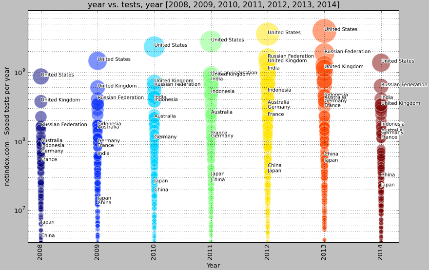Yes, that's a lot of tests. The download is 1.4 GB, compressed. However, neither ISP nor region breakdowns were used, so the input file was a slender uncompressed 22.6 MB. As 2014 hasn't finished yet, the number of tests is quite a bit less. Let's tackle the big elephant in the room first. How do upload speeds correlate with GDP?
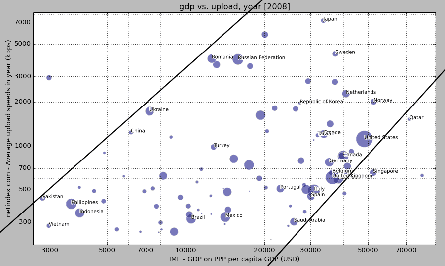In a nutshell, they don't much. They have a bit of a linear correlation, but there's a broad distribution across GDP for a particular upload speed and vice versa. Essentially, the two black lines here are parallel and upload speeds are a luxury - no way around it. They might be a nice to have, but as the envelope indicates, on a macroeconomic level they are a non-essential luxury - per capita sales of hamburgers are probably as correlated to GDP as a graph like this. You're not going to find average upload speeds below 300 kbps if you're on a GDP of more than $30k, but that's about it. This, however, was the data for 2008. Let's look at 2014.
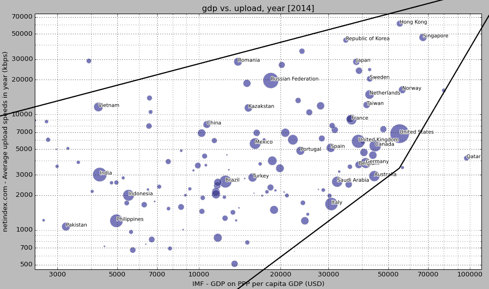It is now rather difficult to imagine any of the bubbles moving right without also moving up. Qatar, oil wealth and all, is moving to 100% FTTH within the next two years, although with heavily limited speeds. We can also plot this a bit more linear and diagonal and come up with this:
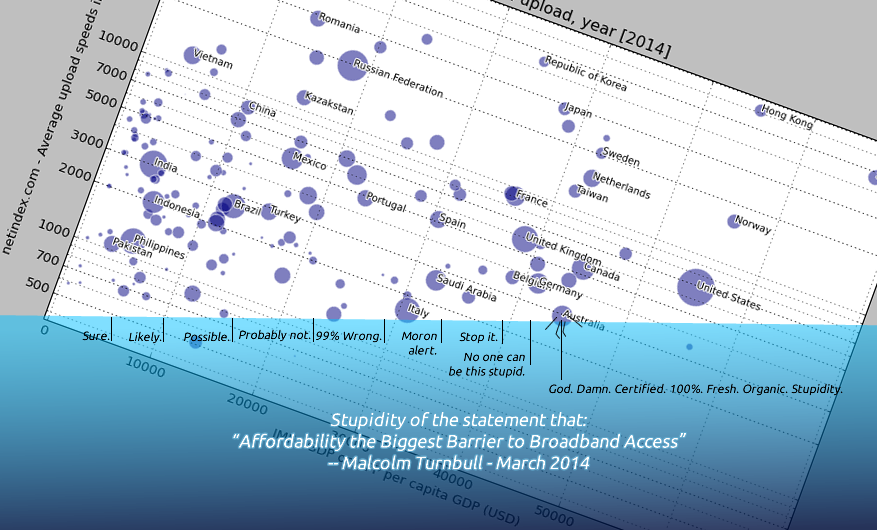You do not want to know where we'd be on this if we subtract the existing NBN customers, many of which on 40 Mbps upload and thus skewing the average substantially. Let's imagine, if you will for a minute, that this is a game. And you are trying to move right in this game, beating everybody else. And then imagine that it isn't a game, but a question of how much you'll have to retire and live - and even buy the aforementioned hamburgers - on. Now, sure, there's plenty of other macroeconomic measures, and we'll get to those. If you'll hold your horses. Point is, Australia's GDP is about $1.5 trillion USD annualy. The NBN is something on an order of magnitude a thirtieth that. Maybe a twentieth, maybe a fiftieth. In this game, would you consider moving, in the worst case scenario, to the left, two or three percent? Spread out by a tenth of that for ten years? Would you if it'll catapult you upwards? Even if it takes a while, I'm not sure many would disagree that it's worth it. In the context of a game, of course. If the causation is stronger than let's say 0.2% - and I think most could imagine there's enough correlation here to warrant at least a detailed unbiassed investigation - then a 0.2% cost must be worth it. It's basic probability. You may consider it a form of insurance?
Now that we've also established how ridiculous the affordability argument is, at a fundamental level, we can also look at the vertical axis and ascertain that the coalition's NBN is rumoured to have a guarantee of 1 Mbps. That's by 2019-ish, by the way. A floppy drive's save speeds are 500 kbps. But it's not all bad news as our Communications Minister has also promised us... ok, never mind. He's assured us? He's made an off-hand comment? Yeah, off-hand comment. Once. I remember now. Apparently 4 to 6 Mbps upload speeds would be typical or something. A 100 MB ZIP disk saves at 12 Mbps, and I don't think those are worth $40-odd billion. But at least we have politicians to figure out the cost of everything and the value of nothing, so we don't have to worry about that.
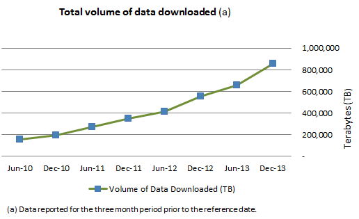And it's not like we have exponentially increasing demand even without any of the previous stuff to worry about. Yes, that is an exponential increase. It also portrays a four-fold increase over about 3.5 years. The coalition's plan seems likely to take peak speeds available from 25 Mbps for most to 100 Mbps, so that's about a four-fold increase. If you are really good at mathematics, you can figure out exactly how long the coalition's $40-odd billion will keep up with this growth, assuming near enough only that speeds and amounts are linked. For the benefit of any coalition MPs or senators or any of their staffers in Canberra who we know are troubled by numbers and need some assistance with this - stop snickering - the number is about 3.5 years. This exponential increase also goes back, consistently, as far as you want in the Australian Bureau of Statistics' 8153.0 data set. The URL, for any coalition MPs among us, is here. Yes, we know you're surprised this exists. Yes, we know you don't understand what they do. And, most importantly, no, you may not privatise it.
To conclude this part, the correlation between upload speeds and GDP is currently fairly weak, but certainly exists. A quadrupling of upload speeds correlates to a gap of GDP from $30,000 to $50,000. A further quadrupling moves it to around $70,000. The degree of correlation also appears to increase with GDP and/or time. But again, it is currently fairly weak. As of 2014, countries with less than $20,000 in per capita GDP have average upload speeds of up to 30 Mbps and almost no country with more than $50,000 in per capita GDP has average upload speeds less than 3,000 kbps.
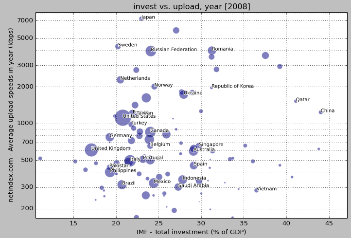Looking at 2008, it's fairly clear that countries with higher upload speeds tend to have a higher percentage of GDP in investments.
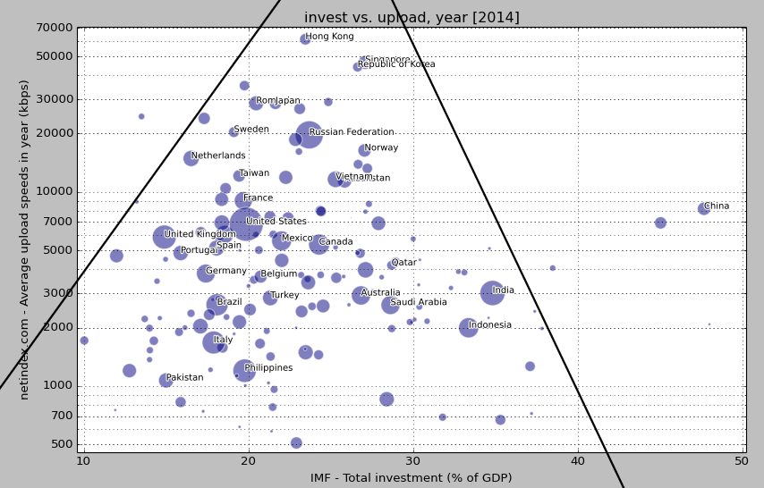Moving to 2014, economies with higher upload speeds tend to have investment levels with a lower standard deviation from each other. One could call this a more stable and globally integrated economy. Assuming a developed economy not greatly benefitting from natural resources, investment as a percentage also tends to be higher.
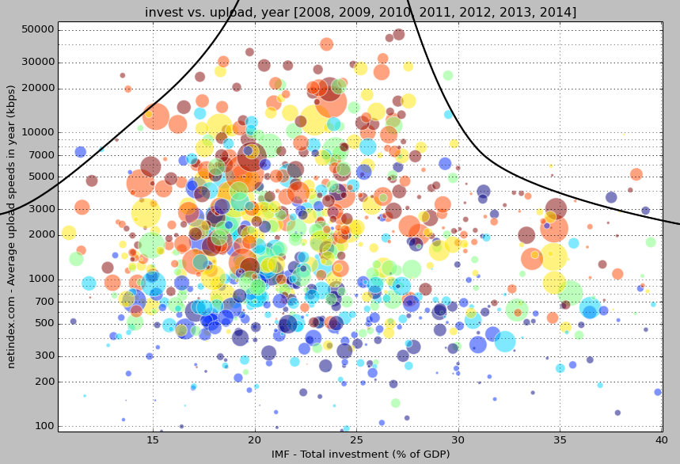And bubble charting all years, zooming in past China and Belarus on the right, we see this correlation confirmed. Investment tend to have a correlation that gravitates to between 20 and 30% as upload speeds are higher. Less volatility appears to be the primary result. An investment in higher upload speeds correlates to only a slight increase in the total investment as a percentage of GDP. There is, as of yet, not sufficient evidence to suggest that high upload speeds correlate to a substantial expense as a percentage of GDP or currently boost investment substantially across all countries. For countries on either sied, such as advanced economies on the left - United Kingdom, Germany, Italy, France, Spain, The Netherlands, Sweden, Taiwan, this funnel correlation would, if maintained, imply a substantial increase in investment as percentage of GDP of several percent, while that of economies like China and India would drop. In Australia, such a correlation would imply that when investment in mining decreases substantially, the landing would be much softer than it would otherwise be.
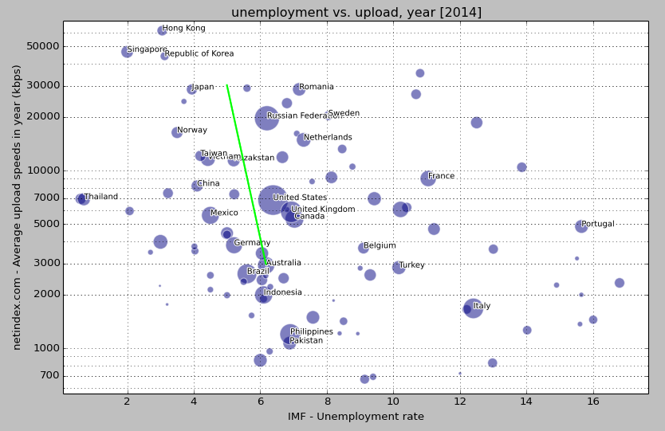Looking at unemployment, we can almost see stepping stones leading up and left, along a number of different trajectories. France, Netherlands, Russia, Japan. Australia, Germany, Mexico, China, Norway, Korea, Hong Kong. Italy, Turkey, Belgium, Canada, UK, USA, Kazakstan, Norway. The green line indicates a 1% drop in an unemployment rate with a ten-fold increase in speed. Given the correlation here, the slope if the green line here seems completely possible. Again, there's no implication of dependence here, but it appears that a government and economy whose policies that create more high upload speeds tend to also have policies that reduce unemployment. And across now three different macroeconomic factors, a multitude of countries and billions of measurements behind this, it might just become a correlation worth believing in?
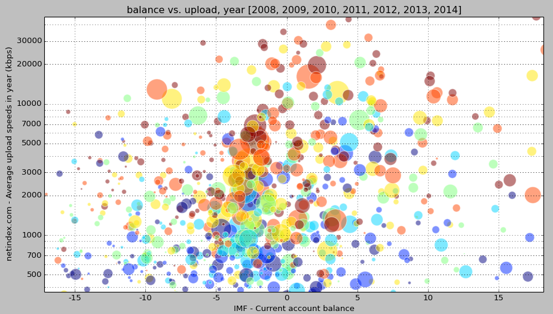Plotting the account balance across all years shows only a slight trend. If there has been a shift in this correlation, we'll need to have a look at only the one year.
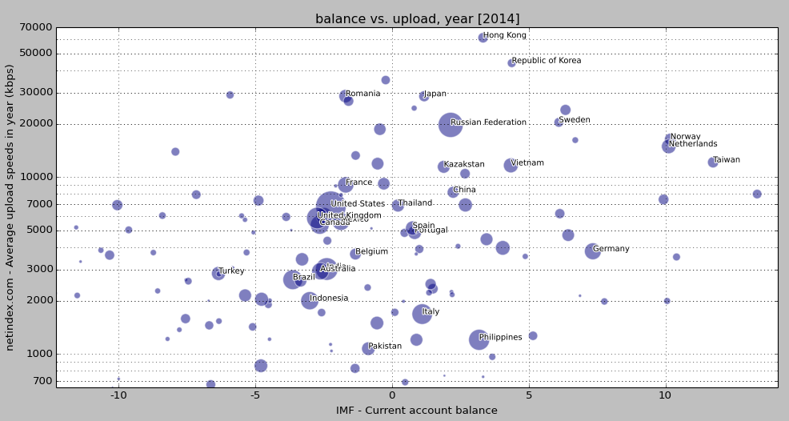And once again, we have a correlation. It is fairly weak, however. Apart from Germany, the car exporter, nations with an average upload speed of less than 7 Mbps tend to have a negative balance. Nations with more tend to have a positive balance. And for anyone who pipes up with the population density argument, Kazakhstan's is almost as low as Australia's and their GDP isn't too hot in comparison to ours. Australia is also one of the most urbanised countries in the world. In that ranking it sits just under Japan and South Korea, a few places above Bahrain, Denmark and Sweden. Kazakhstan, meanwhile, is at number 104.
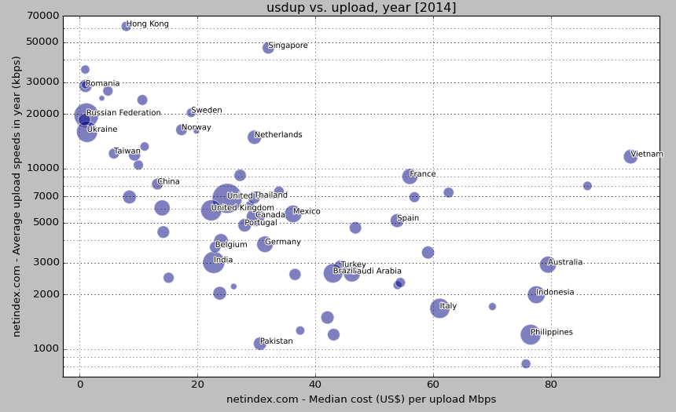Looking at a non-macroeconomic measure, here we have the cost. Astute observers may spot that multiplying the median cost by the mean speed results in a price of $240 a month for Australia. This obviously isn't right. The reason for this is simple. It's the NBN's huge upload speeds, those bastards on 40 Mbps, that are skewing the statistics here. By figuring out a typical average monthly cost - $80, maybe less - for Internet in Australia, the upload speed would be around 1 Mbps without them. In fact, the further above the average-ish line a country is the more expensive and/or inequitable Internet access is there. Absolute speeds aside, in terms of value for every Mbps, Australia does exceedingly poorly, with $80 per Mbps. For this, you can thank both Telstra and, by extension, the people who established it as a private vertical and horizontal monopoly. The same people now in charge of apparently doing their absolute best to keep upload speeds down.
In summary, the correlations between macroeconomic factors and high upload speeds are quite compelling and warrant further investigation. While a dependence or causation is not implied here, it appears that a government and society whose policies create high upload speeds tend to do objectively better in macroeconomic factors. That's the price of the gold-plated, white elephant Rolls Royce known as FTTH. And I'm feeling pretty good about that price and it would be utterly shameful if we didn't take it. It turns out that the kind of government that's interested in the best macroeconomic outcome would do well to build or create a market situation for a ubiquitous FTTH high upload speed broadband. If nothing else, then as an insurance policy and because most governed under a supposedly democratic regime are in support of it.
For a government that basically ran on 'Labor is bad for the economy', when it comes to their efforts on broadband infrastructure they are proving themselves to be doing exactly the wrong things once we have established at multiple macroeconomic correlations. At this point, it is extremely hard to assume that the coalition is not deliberately sabotaging the Australian economy.
Feel free to send me Feedback. If you have anything to do with the coalition, go set yourself on fire. If you're preparing a character assassination, I'd rather have you focus on other things. This page is also on GitHub - feel free to send pull requests.